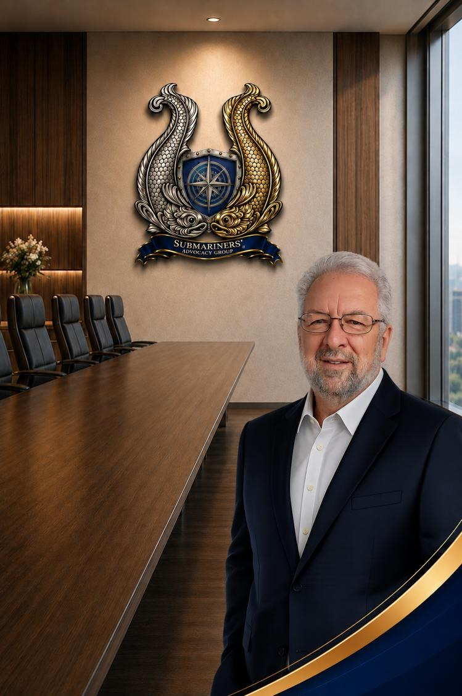

President / Executive Director
David Bozarth
David Bozarth is a founding member and currently serves as President and Executive Director of the Submariners’ Advocacy Group (SAG), where he leads the organization’s national advocacy efforts on behalf of U.S. Navy Submariners, veterans, and their families. As one of SAG’s principal founders, David has played a central role in shaping the organization’s mission, strategic direction, and growing national presence within the veteran advocacy community.
Raised in a small rural town in Missouri, David developed a strong sense of patriotism, service, and duty from an early age. He enlisted in the United States Navy in 1978 and soon volunteered for submarine duty, beginning his journey into the Silent Service. After graduating at the top of his class from Basic Enlisted Submarine School in Groton, Connecticut, he completed follow-on technical training through Polaris Electronics “A” School and advanced Fire Control Technician “C” School training for the Poseidon Weapons System.
David subsequently reported aboard USS LEWIS AND CLARK (SSBN 644) (GOLD Crew), where he earned his Qualified in Submarines designation in February 1981. During his assignment aboard LEWIS AND CLARK, he qualified as a Missile Control Center Technician, Nuclear Weapons Security Guard, and Missile Control Center Supervisor. His operational experience included multiple strategic deterrent patrols, operational testing of the Poseidon Missile System, and participation in an extended refueling overhaul and post-shipyard recertification process supporting the nation’s strategic nuclear deterrence mission.
Following his honorable discharge from the United States Navy in 1984, David transitioned into the civilian sector, applying the technical expertise and operational discipline developed during his submarine service to careers supporting Department of the Navy and United States Marine Corps electronic security systems, information technology, information security, and project management initiatives. Throughout his civilian career, he has supported complex global information systems while continuing to dedicate time and expertise to nonprofit and veteran-service organizations.
David is also a Life Member of the Veterans of Foreign Wars (VFW), where he has served in multiple leadership positions, including District Commander. Under his leadership, Missouri VFW District 7 achieved All-American status in 2022, 2023, and 2025. He has consistently utilized his leadership platform to advocate for greater awareness, visibility, and recognition of the service and sacrifices of Submariners and veterans of the Silent Service.
In March 2024, David recognized the growing need to advocate for Submariners affected by long-term toxic exposure concerns associated with the closed-loop atmosphere aboard U.S. Navy submarines. Following extensive research and collaboration with fellow Submarine veterans, he spearheaded the formation of the Submariners’ Advocacy Group in April 2024 alongside a team of fellow Submariners committed to advancing awareness and advocacy for the undersea warfare community.
Under David’s leadership as Executive Director, SAG has experienced rapid organizational growth and has become an increasingly recognized voice advocating for Submariners nationwide. His leadership, passion, and unwavering commitment to the Silent Service continue to drive SAG’s mission to support, educate, and advocate for those who have served beneath the sea.